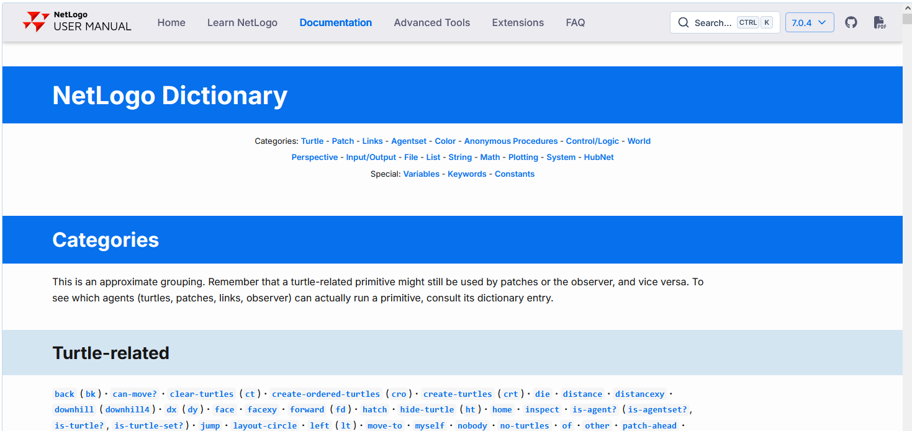
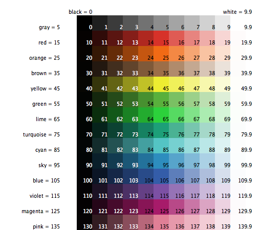
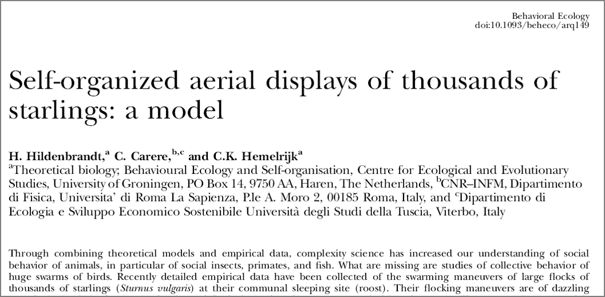

NetLogo Basics
EES 4760/5760
Agent-Based and Individual-Based Computational Modeling
J. Magnolia Gilligan
Agenda
- Understanding structure of NetLogo models
- Elementary NetLogo commands
- Some principles of good programming
- Overview of agent-based modeling
Start NetLogo on your computer.
Remember: All slides from class are available at https://ees4760.jmgilligan.org
Checking In
Checking In
- Have you done the “mushroom hunt” homework?
- How did it go?
Fundamentals of NetLogo
Four Fundamental Code Parts
|
|
|
|
|
|
|
|
Kinds of Objects (Nouns)
- Turtles
Turtles are any kind of agent
Turtles can move around
-
Turtles have properties (
turtles-own)turtles-own [ age height hunger ] -
Your model can have more than one “breed” of turtle (e.g., wolves and sheep)
breed [wolves wolf] breed [sheeps sheep] ; names must be distinct
- Patches
Patches represent the environment in which turtles live
Patches are always square and stationary
-
Like turtles, patches can have properties
patches-ownpatches-own [ elevation fertility ]
- Links: Connect pairs of turtles
- Agentsets: groups of agents (turtles, patches, links)
- The Observer: The global context in which the other objects exist.
Why “Turtles”?
- The Logo language originated before graphical displays were common.
- Seymour Papert invented a robot turtle that would roll around
under computer control
- It had a pen or pencil that it could raise or lower to trace out its path on a piece of paper.
- NetLogo agents share behavior with the original turtle:
- Turn left or right
- Move forward
- Raise or lower a “pen” to trace their paths
Operations (Verbs)
Two kinds of operations:
- Procedures
Do things (eat, move, grow, buy, sell, …)
-
Defined using
to:to wander right random 360 forward random 5 end
- Reporters
Calculate something and return a value
-
Defined using
to-report:to-report turtles-nearby report count turtles-on neighbors end
Let’s Build A Model!
A Simple Model of an Ecosystem
- The landscape is initialized with random amounts of sugar on each patch
- 100 turtles live on the landscape
- At each tick:
- Every patch adds 0.05 to its sugar up to a maximum of 100
- Every turtle’s hunger increases by 1, up to a maximum of 10
- Every turtle eats sugar until it is no longer hungry, or the sugar on that patch runs out
- The turtle decides whether it wants to move:
- If there are other turtles on the patch, or if there is not enough sugar on the patch to satisfy its hunger, then the turtle will move to the neighboring patch with the largest amount of sugar.
Create a New Model
- In NetLogo, open File menu and choose New
- Add three buttons:
- “setup” (type “setup” in “Commands” space)
- “go” (check the “forever” button)
- “step” (type “go” in “Commands” space and “step” in “Display Name”)
- Go to the code tab and type this:
globals
[
max-sugar
sugar-growth
]
turtles-own [ hunger ]
patches-own [ sugar ]Model Initialization (setup)
Include only things done once to initialize the model
- Note: anything after a semicolon is a comment and NetLogo ignores it.
- All code exists in specific contexts: turtles, patches, observer, etc.
- If you write code for turtles in a patch context, it will cause an error
- Brackets (
[…]) delimit contexts- The brackets under
create-turtlescontain a context with commands for each turtle that’s created.
- The brackets under
clear-allandreset-ticksare called in the observer context.
Example:
to setup
clear-all
; <set up patch variables>
; <paint patches in neat colors>
create-turtles 100 ; number of turtles to create
[
; <set up turtle variables, etc.>
]
; <plot initial model state (histograms, etc.)>
reset-ticks
endInitialize Your Model
Type this into the code tab for your model:
to setup
clear-all
set sugar-growth 0.050
set max-sugar 100
ask patches
[
; this is a patch context
set sugar random max-sugar
update-pcolor
] create-turtles 100
[
; this is a turtle context
setxy random-xcor random-ycor
set hunger 5
update-color
]
reset-ticks
end
to update-pcolor
end
to update-color
endScheduled Actions (go)
- “
go” is repeated over and over to execute model. - Include only stuff to be executed each time step
- Keep the “
go” procedure simple and neat- For complicated stuff, use submodels
- Include termination point
Type this into your model after the to setup
procedure:
to go
tick
ask turtles [
if hunger < 10 [ set hunger hunger + 1 ]
eat
move
update-color
]
ask patches
[
if sugar < max-sugar [ set sugar sugar + sugar-growth ]
if sugar > max-sugar [ set sugar max-sugar ]
update-pcolor
]
if ticks > 2000 [ stop ]
end
; Submodels
to eat
end
to move
endTricky Things
tick vs. ticks
tick— (verb) increments time by one periodticks— (noun) measures the time elapsed since the start-
More technical explanation:
- NetLogo has an internal tick counter
-
tickincrements the tick counter -
ticksreports the current value of the tick counter
-
- NetLogo has an internal tick counter
tick vs. ticks
Good code:
to go
tick
if ticks > max-ticks
[stop]
...
ask turtles [set age ticks]
endBad code:
to go
ticks
if tick > max-ticks
[stop]
...
ask turtles
[
tick
set age ticks
]
endElementary NetLogo Commands
Elementary NetLogo Commands
- Searching NetLogo dictionary
- Working with
agentsets - Working with variables
- Code branching (conditional statements)
- Working with stochasticity
- Working with graphics
- How to make your code legible to others (documentation, comments, and tabbing)
Searching NetLogo Dictionary
- NetLogo dictionary is a web page
- Use “Find on this page” in your web browser.

Working with agentsets (ask)
-
An agentset is a group of zero or more turtles, patches, etc.
- Plural nouns (
turtles,patches) refer to agentsets. - Singular nouns (
turtle,patch) refer to individual agents.
- Plural nouns (
-
“
ask” tells an agent or all members of an agentset to do the code in the following brackets:ask turtles [ forward 5 ] -
All members of the agentset do the code, one at a time, in random order.
- The commands are executed in each agent’s context
Be careful not to put anything in the brackets that should not be repeated for each member of the agentset!
How are these different?
ask turtles
[
buy
sell
update-bank-account
]ask turtles [buy]
ask turtles [sell]
ask turtles [update-bank-account]Working with agentsets (with)
turtlesis an agentset of all turtles.-
withis one of many primitives that select a subset of an agentset:ask turtles with [color = blue] [move] -
Similar keywords for subsetting:
-
with-min,with-max(one or more turtles) -
n-of,max-n-of,min-n-of(exactly n turtles) -
one-of,max-one-of,min-one-of(exactly one turtle)
-
Use the dictionary to look up correct syntax.
-
If no turtles meet the criteria,
withcreates- an empty agentset with no turtles,
- or (for the
one-ofselectors) returnsnobody(a special NetLogo primitive meaning a turtle that doesn’t exist)
Working with agentsets (of)
-
“
of” provides a list of the values of an-ownvariableset happiness min [happiness] of turtles-on neighbors- In a patch context,
neighborsmakes an agentset of the neighboring patches. turtles-onmakes an agentset of all the turtles onneighbors[ happiness ]gets theturtles-ownvariablehappinessin the context of each turtle inturtles-on neighbors
- In a patch context,
-
More generally, “
of” is a primitive for getting a value from another agent or agentset: iffriendis another turtle,set happiness [happiness] of friend Use the dictionary to look up correct syntax.
Add Movement to Our Model
to move
if sugar <= 0 or any? other turtles-here
[
move-to max-one-of neighbors [ sugar ]
]
endIf there isn’t any sugar, or if there’s another turtle on the patch, it moves to the neighboring patch with the most sugar.
- We run
movein the context of a turtle:- For each neighbor of the patch the turtle is on, look up
sugarin the context of that neighbor- The brackets
[…]signal the change of context.
- The brackets
- Find the neighbors with the maximum
sugar, and pick one of them at random - In the context of the original turtle, move to that neighboring patch
- For each neighbor of the patch the turtle is on, look up
Working with agentsets (=, set)
- Two fundamental kinds of operations:
- Changing the value of a variable:
- Assignment operations (
set)
- Assignment operations (
- Checking to see whether a value satisfies some condition:
- Conditional operations (
=, also>,<,>=,<=,!=)
- Conditional operations (
- Changing the value of a variable:
Equals or no equals?
Assignment statements
- Wrong:
happiness = ([happiness] of a-neighbor-turtle)- Right:
set happiness ([happiness] of a-neighbor-turtle)Conditional statements (Logical: yes or no)
if happiness = 3
[stop]
if happiness <= 3
[stop]
if happiness != 5 or ticks > 17
[stop]Working with variables: set vs. let
Global variables (known to all procedures)
Local variables (known only to one procedure)
-
Use
letto create and set the value of a new local variable:let mean-neighbor-size mean [size] of turtles-on neighbors -
Use
setto change the value of an existing variable (global, local, patch, turtle, etc.)set wealth wealth * 1.1 set hypotenuse sqrt(a ^ 2 + b ^ 2)
Working On Our Model
Type this into “code” tab to update to eat and
to move in our model:
to eat
ifelse hunger > sugar
[
; Use set to change an existing variable "hunger"
set hunger hunger - sugar
set sugar 0
]
[
set sugar sugar - hunger
set hunger 0
]
end
to move
if sugar <= 0 or any? turtles-here
[
; Use let to create a new variable "dest"
let dest max-one-of neighbors [ sugar ]
move-to dest
]
endWorking with variables: Giving a value to another agent
- How does one patch (or turtle) give the value of one of its
variables to other patches?
- There are two ways to do this.
ask neighbors [set pcolor [pcolor] of myself]let my-color pcolor
ask neighbors [set pcolor my-color]- Turtles implicitly access
patches-ownvariables (e.g.,pcolor,sugar) of the patch they’re on as though they wereturtles-own - Converse is not true: Patches don’t automatically see
turtles-own - Why?
- A turtle can only be on one patch at a time,
- But a patch may have multiple turtles.
Code branching (conditional statements)
ifelse (logical condition)
[
; Do this if condition is true ...
]
[ ;else
; Do this if condition is false
]Working with stochasticity (randomness)
-
Uniform distribution of random numbers between
aandb:a + random (b-a) -
Normal distribution with mean
mand std. deviations:random-normal m s -
Selecting one patch at random and turn it green
ask one-of patches [set pcolor green] -
Selecting one agent at random from an agentset and turn it right 5 degrees:
ask one-of turtles [right 5]
Working with graphics

Updating Our Model
Edit the procedures update-pcolor and
update-color
to update-pcolor
; black for 0, bright yellow for max-sugar
set pcolor scale-color yellow sugar 0 (2 * max-sugar)
end
to update-color
ifelse hunger > 5
[
; white for 5 to bright red for 10
set color scale-color red hunger 15 5
]
[
; bright green for 0, white for 5
set color scale-color green hunger -5 5
]
end-
scale-color color value range1 range2sets the lightness of the color.- Higher values = lighter, lower = darker.
- If
range1 > range2, light and dark are reversed.
Running Our Model
- Press “Check” and make sure there are no syntax errors
- Go to “Interface” tab
- Click on “setup”
- Click on “go”
- You can download a copy of the model from https://ees4760.jmgilligan.org/models/class_03/class_03_example-a.nlogo
Interacting with a Model
On the “interface” tab:
-
Right click and add a Slider
- Type “sugar-growth” into “Global Variable”
- Set minimum to 0, increment to 0.005, maximum to 0.1, and value to 0.050
-
Open the code tab and comment out definition and initialization of
sugar-growthglobals [ max-sugar ; sugar-growth ] ... to setup clear-all ; set sugar-growth 0.050 ...
Monitoring a Model
On the interface tab:
- Right click and add a Plot
- Name the plot “Hunger”
- Set X max to 10 and Y max to 100
- Type “Hunger” for “X axis label” and
“# Turtles” for “Y axis label” - Click on the pencil icon next to
“default” pen- Choose “Bar” for “Mode”
- In “Pen update commands” type
histogram [hunger] of turtles
- Press “OK”

Play with the model
- Do interesting things happen for different values of
sugar-growth? - It might be fun to comment out the line in
to gothat stops the model after 2000 ticks
; if ticks > 2000 [ stop ]Good Practices for Programming
Making your code legible to other people
- Comment, comment, comment.
- Variable declaration: purpose and legal values
- Procedure: purpose and description
- Submodel equations: explain and cite the source
- Indent code so it shows clear blocks
- After you’re finished coding, take time to write detailed documentation (Chapter 3 will describe documentation)
When in doubt, use this.
Example of a Research Model
Example: Flocks of starlings
- Thousands of individuals
- unique and different
- interact locally
- show adaptive behavior

Starling murmuration
By Liberty Smith & Sophie Windsor Clive, Islands and Rivers, https://vimeo.com/31158841